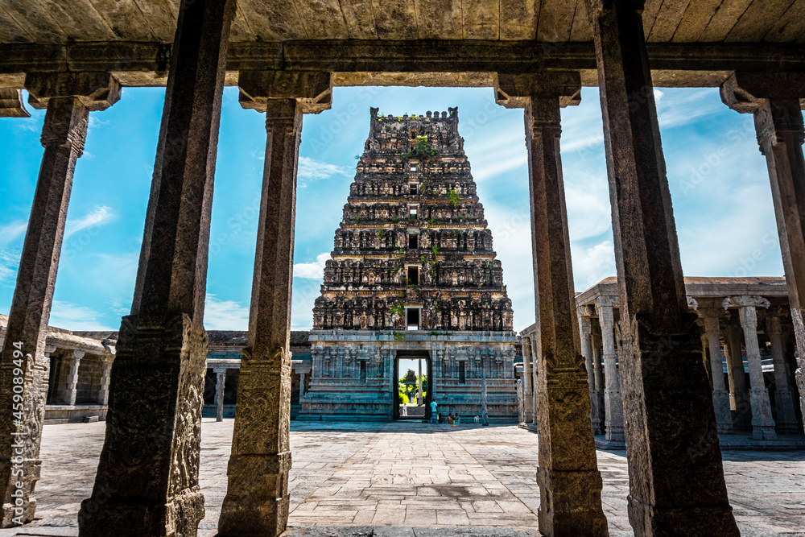

Ulagalantha Perumal Temple or Trivikrama Temple is a Hindu temple dedicated to Vishnu located in Tirukkoyilur, Tamil Nadu, India. Constructed in the Dravidian style of architecture, the temple is glorified in the Naalayira Divya Prabandham, the early medieval Tamil canon of the Alvar saints from the 6th–9th centuries CE. It is one of the 108 Divya Desams dedicated to Vishnu, who is worshipped as Ulagalantha Perumal and his consort Lakshmi as Poongothai.[1] The temple is believed to have been built by the Medieval Cholas, with later contributions from Vijayanagara kings and Madurai Nayaks. The temple covers an area of 5 acres (20,000 m2) and has a temple tower that is the third tallest in Tamil Nadu, measuring 192 ft (59 m) in height. According to Hindu myths, Vamana, a Brahmin dwarf avatar of Vishnu, appeared here to quell the pride of the asura king Bali. The temple is believed to be the place where the first three Alvars, the Vaishnava Saints, namely, Poigai Alvar, Bhoothathalvar, and Peyalvar attained salvation. The temple is one of the Panchakanna (Krishnaranya) Kshetrams, the five holy temples associated with Krishna, an avatar of Vishnu. Ulagalantha Perumal is believed to have appeared to King Mahabali and the Alvars. Six daily rituals, and a dozen yearly festivals, are held at the temple, out of which the chariot festival, celebrated during the Tamil month of panguniபங்குனி (March–April), is the most prominent. The temple is maintained and administered by the Hindu Religious and Endowment Board of the Government of Tamil Nadu.
